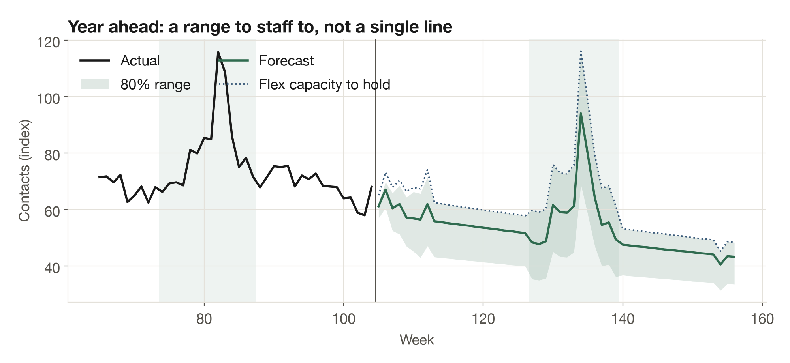
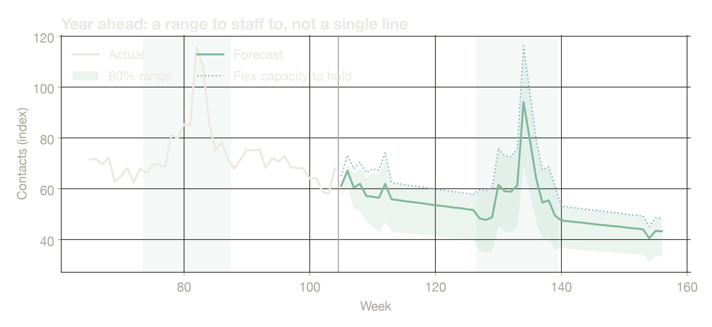

Services
Contact-center forecasting & staffing.
Know how accurate your contact forecast really is, and staff to a plan you can trust. I test your current forecast on past weeks, build a better one if it's needed, and turn it into a weekly staffing plan with ranges for peaks.
What I do
Three steps, in this order.
A forecast that is 10% off on a 50-agent team means about five agents too many, or too few, every week.
Backtest your forecast
I score your current method on past weeks it didn't see, so you know how far off it usually runs.
Build a better one
Several methods are compared the same way, holiday peaks included, and the one with the best record is kept.
Turn it into a staffing plan
Agents needed each week, an 80% range for uncertainty, and flexible capacity for peaks instead of permanent hires.
Recent work
A support team whose volume kept falling.
A consumer retail support team needed a year-ahead forecast while its volume was dropping and its holiday peaks were still sharp. I compared several methods on a rolling backtest, kept the one with the best record on unseen weeks, and built a weekly staffing plan with ranges.


Results
5 in 6
normal weeks within 10%, one week ahead
2–3×
baseline capacity planned for the holiday peak
Monthly
reissue, because accuracy drops further out
Full case study →How we start
A free backtest, in two weeks.
NDA and data
We sign a mutual NDA. You send 12 months or more of weekly contact counts, by channel if you have them. Download the data template.
Backtest
I score your current forecast and mine on the same past weeks.
Report and call
A short report with the error record and the staffing gap in hours and dollars, walked through on a 30-minute call.
Your call
If it's useful, I build the forecast and staffing plan, once or monthly. If not, you keep the report.
Pricing
In US dollars.
The final price depends on the number of queues and channels.
$0
Backtest
Your current forecast scored against mine, with the staffing gap.
$600–1,200
Forecast & staffing build
A tested weekly forecast, a year-ahead staffing plan and the method write-up.
$400–800 / month
Monthly plan
The forecast and staffing plan refreshed every month, an accuracy report, and planning for holidays, launches and AI chatbot rollouts.
Questions
Before you send data.
What data do you need?
Weekly contact counts for at least a year, two if you have them. Channels and average handle time help but are optional. No customer names, messages or phone numbers: counts only.
How is my data protected?
We sign a mutual NDA first. Data stays on encrypted devices, is never shared, and is deleted on request or at the end of the work. I don't name clients, and published examples are indexed and altered.
We don't have a forecast today. Is the backtest still useful?
Yes. I compare against simple rules such as "same as last week" or "same week last year", which is what many teams use in practice.
Do you replace our workforce management software?
No. The forecast and staffing numbers can be loaded into the tool you already use. Smaller teams often use the plan directly as a spreadsheet.
What time zone do you work in?
Cebu City, Philippines (UTC+8). Calls in Australian business hours, or US mornings, which are my evenings.